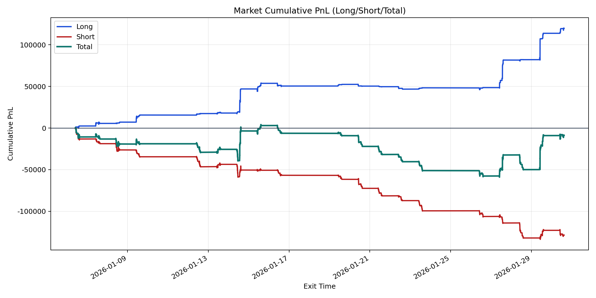
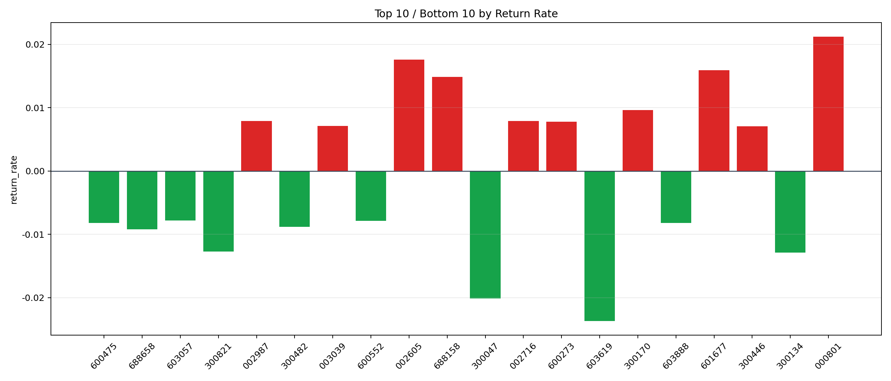

| repo_root | /home/haoranyou/data/output/alpha0.4_1w_5s_3ticks_index_filter/index_weights_1000 |
|---|---|
| period_months | 1 |
| period_label | 2026-01-06_to_2026-01-30 |
| start_time | 2026-01-06 09:51:57 |
| end_time | 2026-01-30 15:00:00 |
| n_trades | 17643 |
| n_symbols | 320 |
| total_pnl | -8850.226349999926 |
| long_total_pnl | 119699.32410000006 |
| short_total_pnl | -128549.55044999998 |
| total_entry_notional | 165032729.0 |
| long_entry_notional | 33903974.0 |
| short_entry_notional | 131128755.0 |
| total_return_rate | -5.362709811336833e-05 |
| long_return_rate | 0.0035305396382146843 |
| short_return_rate | -0.0009803307478211012 |
| top_symbols_by_return | ["000801", "002605", "601677", "688158", "300170", "002716", "002987", "600273", "003039", "300446"] |
| bottom_symbols_by_return | ["603619", "300047", "300134", "300821", "688658", "300482", "600475", "603888", "600552", "603057"] |

